Developed an interactive AR-based experience for LYF One-North under Ascott Group, centred on the theme of environmental sustainability. The project aims to encourage exploration within the compound, build community engagement, and promote the brand through gamified digital experiences.
Targeted at working adults aged 18-50, the project explores gamified AR experiences on Instagram to promote environmental sustainability. My contribution focused on the final AR filter game, designed around collecting and interacting with recyclable elements.
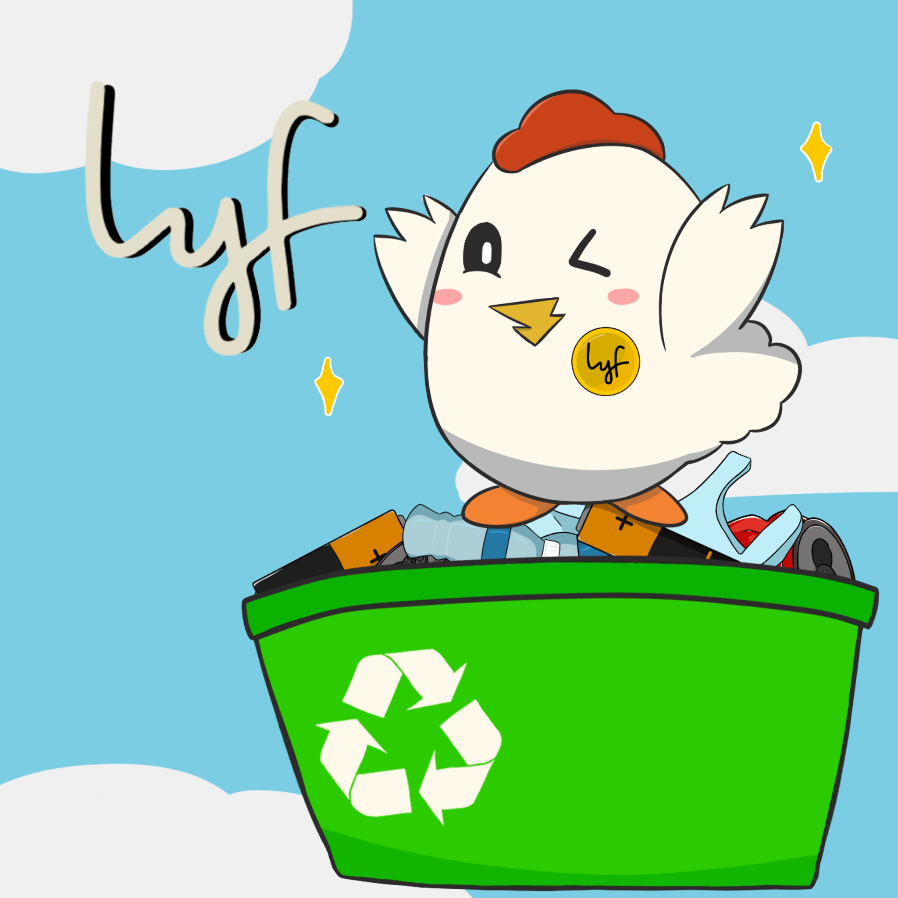
Early ideation - layout sketches to establish visual direction before moving into final art production.
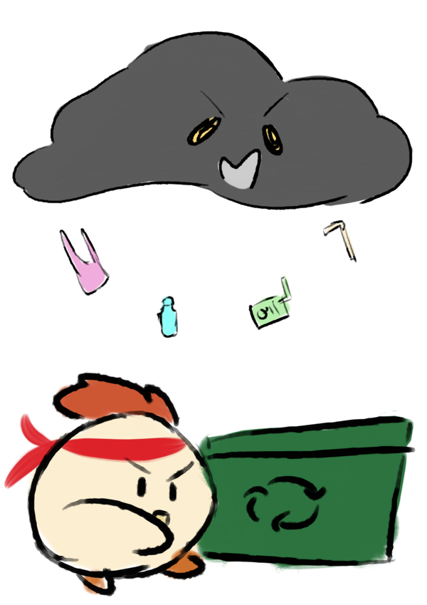
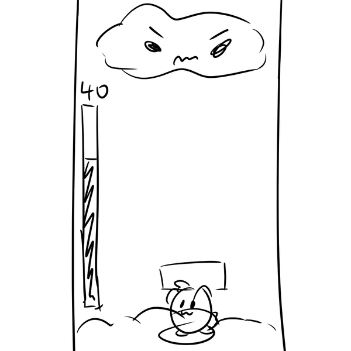
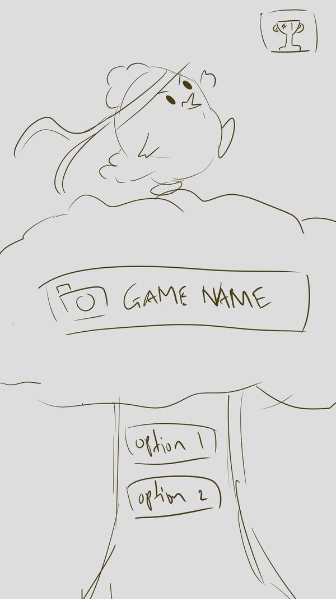
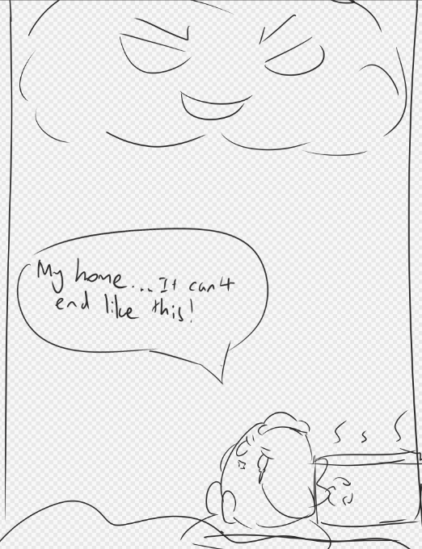
Final three chicken forms produced in Krita - Idle, Win and Lose states
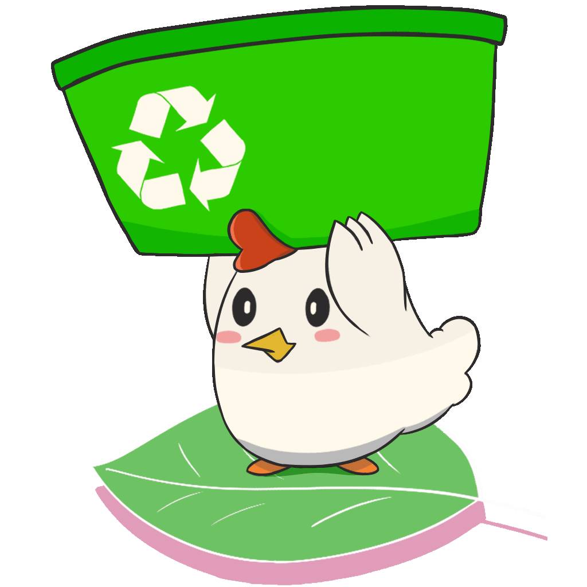
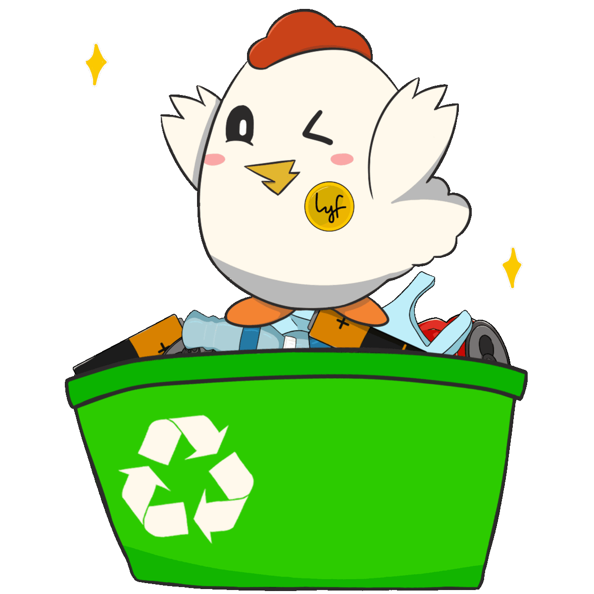
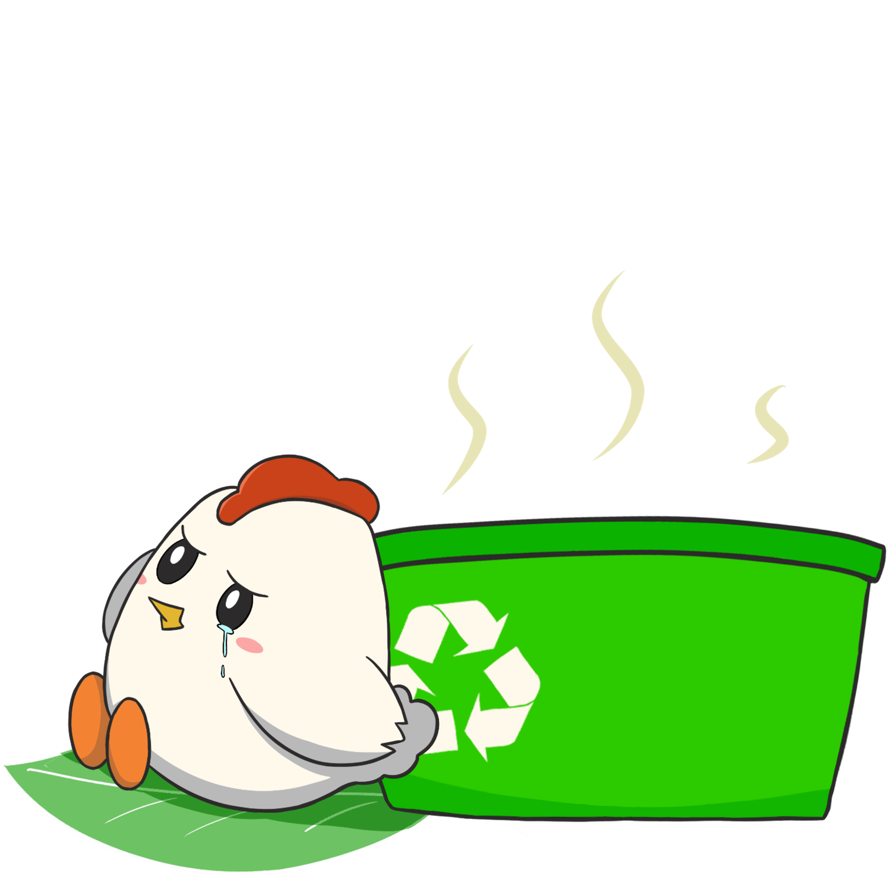
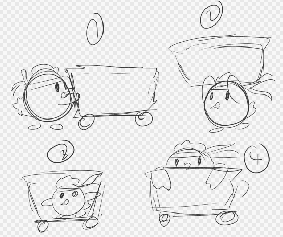
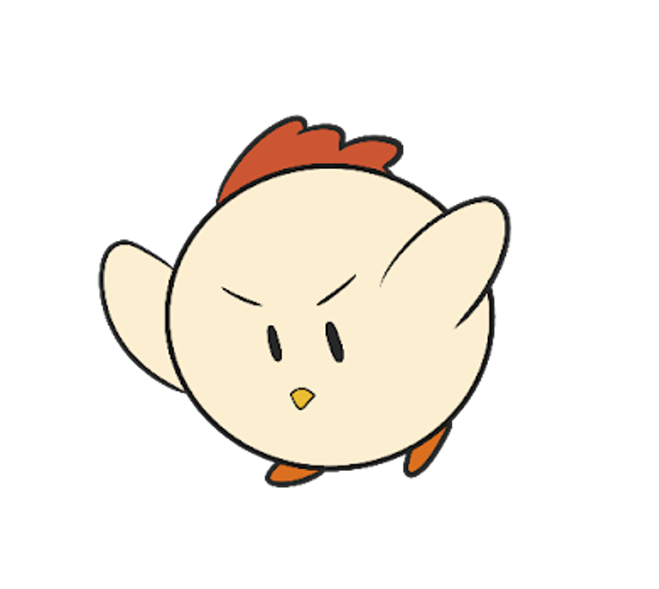
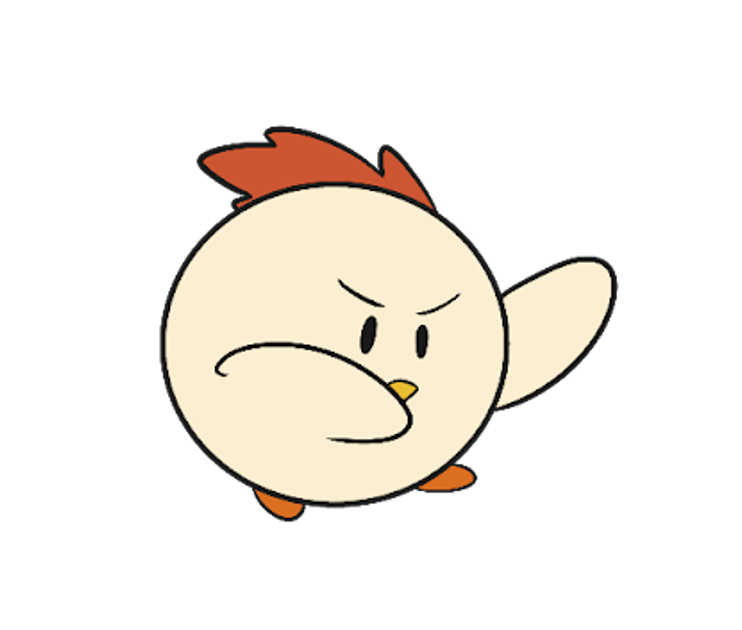
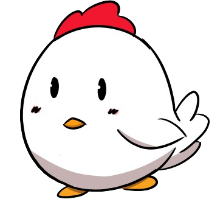
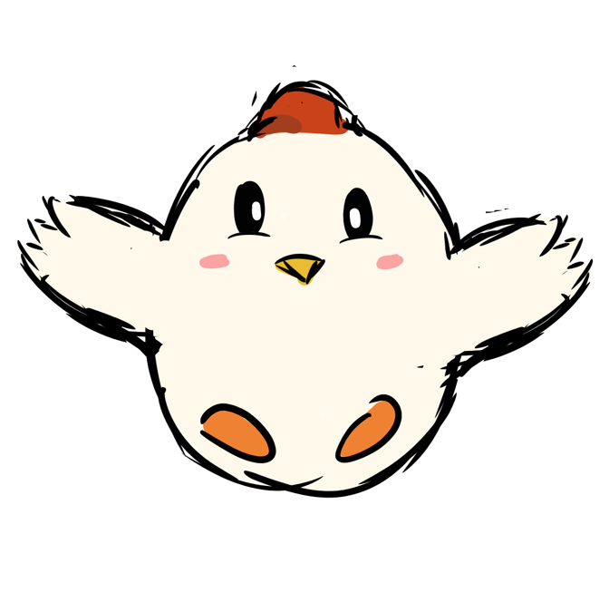
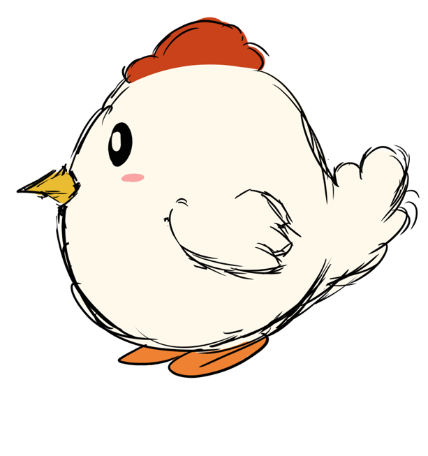
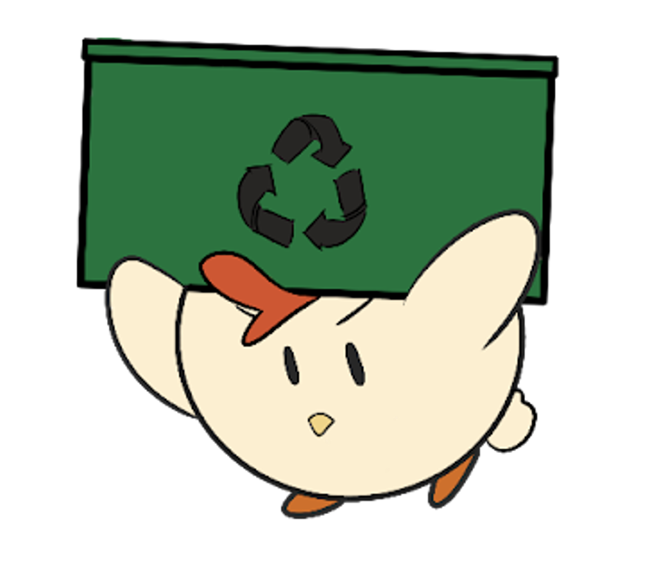
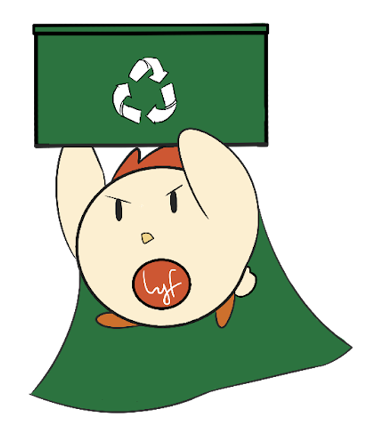
Early character explorations.
Final 2D game art produced in Krita - recyclable collectibles, obstacles, and UI elements.
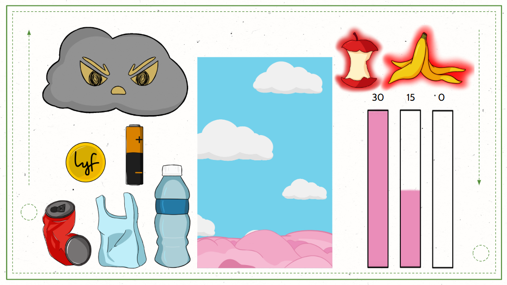
All assets created in Krita.
Original gameplay concept built around a food-catching face-filter mechanic with three states.
Dumplings, LYF coins, and chickens fall at increasing speed. Catching a LYF coin triggers Fever Mode; catching a chicken triggers Chicken Mode.
5 seconds of bonus play triggered by the LYF coin, before a big chicken ends it and returns the game to Normal.
Danger zone - eggs and garlic drop instead of dumplings. Eat an egg and you lose; eat enough garlic to chase the chicken away and return to Normal. The more times you enter this mode, the more garlic required.
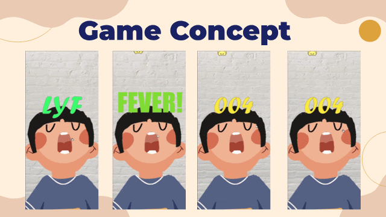
Client felt the dumpling theme had no connection to LYF or the sustainability brief - the mechanic was redesigned around their existing mural artwork and recyclable elements.
Recyclable items, LYF coins, and clouds fall at increasing speed. Catching a LYF coin triggers Fever Mode; catching a cloud triggers Cloud Mode.
5 seconds of bonus play triggered by the LYF coin, before returning to Normal. Missing recyclables has no consequences.
Danger zone - toxic garbage drops instead of recyclables. Collecting it causes a loss. Survive 10 seconds to return to Normal.
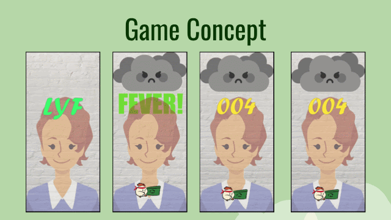
Final gameplay recordings of the AR filter in action. Features reduced due to time and SparkAR limitations however, the core gameplay concept is kept.
*SparkAR programming done by teammate